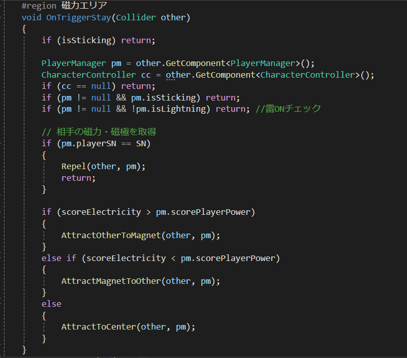
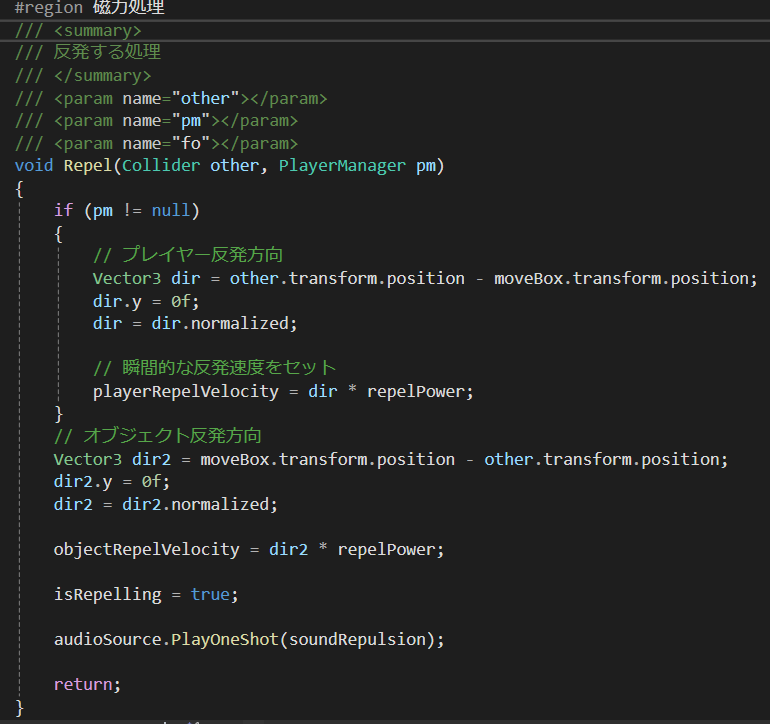
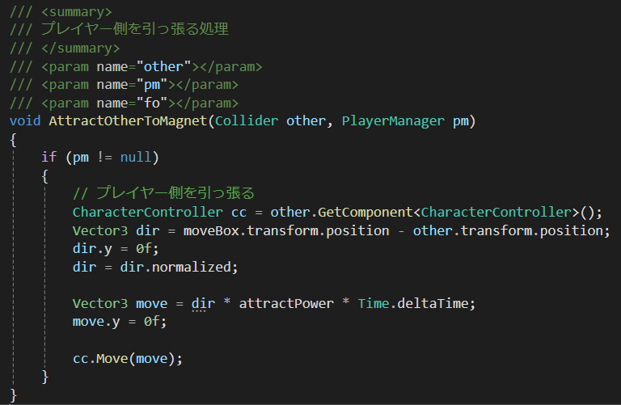

このエリアに磁力をONにした状態で入ることで自分の磁極によって引き寄せるか反発するか判定しています。また、磁力の大きさが決まっていてそれに応じて どちらが引っ張る側かを判定して処理しています。
Repelという関数で磁極が同じなら反発するようになっています。初めにif文で磁極が同じか判定することでこの処理をしなかった場合に下の処理は 磁極が違うと判定できています。
一番下の関数AttractToCenterは、自分とオブジェクトお互いが引き寄せ合うようなこともできます。

transform.positionをお互い反発するように計算処理を入れて瞬間的にするためにplayerRepelVelocityに速度をセットしてUpdate内で移動させる処理を入れています。 repelPowerを調整することによって反発力を調整することができます。

attractPowerを調整することによって引き寄せの力が変わります。キャラクターコンポーネントを使用しているためcc.Moveでプレイヤーをオブジェクトのほうへ 引き寄せるように処理を組んでいます。